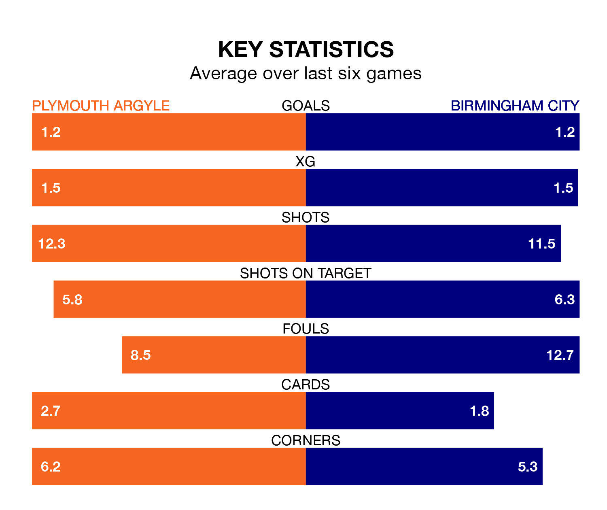

Plymouth Argyle host Birmingham City on Saturday at Home Park in the Championship.
In their last league match, on December 16, Plymouth beat Rotherham United 3-2 at home, with goals from Finn Azaz (two) and Morgan Whittaker.
Birmingham lost, 3-2 at home against Leicester City on Monday, with Jordan James (two) scoring their goals.
With 26 goals in 22 games so far this season, Birmingham are scoring at below the league average rate with 1.2 goals per game. And they are conceding more than average, letting in 32 goals at a rate of 1.5 per game.
Plymouth, meanwhile, are above average scorers, with 1.5 goals per game, compared to a league average of 1.4. They have conceded 1.6 goals per game.
In Whittaker, Argyle have one of the league's sharpest shooters so far this season. He has notched nine goals in 22 appearances, to sit sixth in the scoring charts.
City's top scorers, with five goals each, are Siriki Dembele and Jay Stansfield.
The Blues are 17th in the table after 22 games, of which they have won seven and drawn five, earning 26 points.
The Pilgrims are one place ahead of the away side in 16th, with seven wins and five draws putting them on the same number of points.
The hosts are in mixed form in the Championship, with three wins and a draw from their last six games.
With two wins and a draw over that period, Birmingham's form is worse – they have taken seven points from 18, compared to Plymouth's 10.
Over the last two years, Plymouth and Birmingham have played each other twice. They won one each.
Their last meeting was on August 26, when Birmingham won 2-1 at home.
Saturday's match will be refereed by Graham Scott, who has taken charge of five Championship games so far this season, issuing two red cards and booking 30 players. He has awarded two penalties.
He is yet to oversee a match featuring either Plymouth or Birmingham this season.
Updated: 15:16, 21/12/23